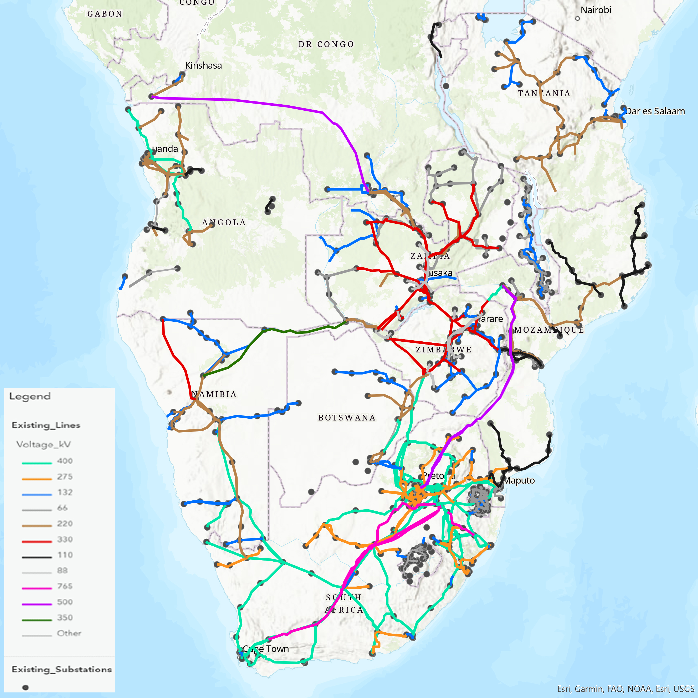

Power pool profile
SAPP
Southern African Power Pool — regional coordination for electricity planning, trading, and interconnection.


SAPP charts (hover points + zoom/pan)
⚡ Access to Electricity
👥 Population
🚫 Population without Access to Electricity
Electric power consumption (kWh per capita)
What it does
Coordinates grid planning and enables cross-border electricity exchange among member utilities.
Why it matters
Improves reliability and supports a more efficient balance between supply and demand.
Interconnection
Strengthens transmission links to share surplus power and reduce constraints during peaks.
Next steps
Replace this placeholder content with your preferred SAPP details (members, projects, milestones, key documents).